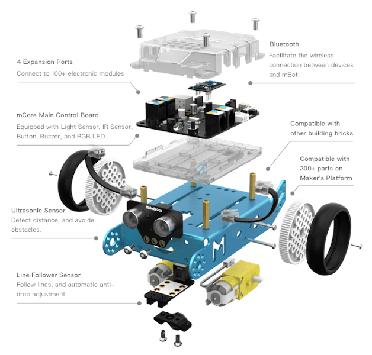
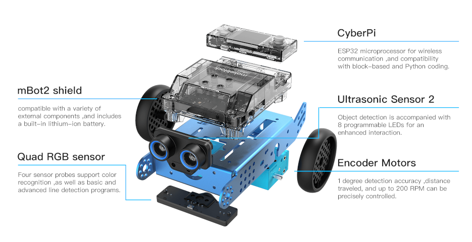

risorse | mbot vs. mbot2
ATTENZIONE! Ho posto la massima cura ed attenzione nel redigere questi appunti; declino tuttavia ogni responsabilità per eventuali imprecisioni, errori od omissioni, così come declino ogni responsabilità per eventuali danni a cose, proprietà o persone derivanti dall’uso di questi contenuti.
Le considerazioni qui sotto rispecchiano lo stato delle cose a gennaio 2022. Considerando l’evoluzione degli strumenti software analizzati è assai probabile che diverranno obsolete entro poche settimane, al più mesi.
Ho avuto modo di utilizzare il robot mBot2 nel contesto di un corso di introduzione alla programmazione e alla robotica nei mesi di gennaio/febbraio 2022. Riporto qui alcune brevi e personali considerazioni circa le differenze tra questa versione del robot e la precedente che possiedo e ho utilizzato con profitto in alcuni RoboDojo.
Le scocche in allluminio dei due robot, a parte qualche piccolo dettaglio, risultano di fatto identiche seppure non intercambiabili. Anche le dimensioni e il peso sono comparabili. La differenza sostanziale la fa l’elettronica di controllo: se in mBot è costituita dalla sola scheda mCore, basata su Arduino, in mBot2 si suddivide tra il cervello vero e proprio costituito dal SBC (Single-board computer) CyberPi e dalla scheda ausiliaria mBot2 shield che contiene la batteria ricaricabile, i circuiti di controllo dei motori e qualche porta di espansione proprietaria.
L’esploso di mBot
L’esploso di mBot2
| mBot | mBot2 | ||
|---|---|---|---|
| Principale | |||
| Scheda di controllo | mCore (Arduino) | CyberPi | |
| Programmazione | Blocchi, C | Blocchi, Python | |
| Alimentazione | LiPo/4 stilo AA | Li-ion integrata | |
| Prezzo indicativo | 90€ | 180€ | |
| Processore | |||
| CPU | ATmega328P | Xtensa 32-bit LX6 dual-core | |
| Frequenza | 16MHz | 240MHz | |
| Memoria | |||
| ROM | - | 448KB | |
| Memoria Flash | 32KB | 8MB SPI + 8MB PSRAM | |
| RAM Statica | 2KB | 520KB | |
| EEPROM | 1KB | - | |
| Multithreading | No | Sì | |
| Programmi memorizzabili | 1 | 8 | |
| I/O | |||
| Interfaccia USB | Sì (tipo B) | Sì (tipo C) | |
| Interfaccia Seriale | Sì | No | |
| Interfaccia SPI | Sì | No | |
| Interfaccia I2C | Sì | No | |
| Tecnologia Wireless | Bluetooth o WiFi, I/R | Bluetooth, WiFi, WiFi LAN | |
| Porte di espansione | 4 RJ25 | 1 mBuild(1), 2 generiche, 2 servo | |
| Pulsanti | |||
| Joystick | No | Sì | |
| Generici | 1 | 2 | |
| Reset | Sì | Sì2 | |
| LED | |||
| LED | 2 RGB | 5 RGB (striscia LED) | |
| Display | - | 1.44" 128×128 a colori | |
| Attuatori | |||
| Audio | Cicalino | Altoparlante | |
| Driver motori CC | 2 | 2 | |
| Driver motori con encoder | - | 2 | |
| Sensori | |||
| Audio | - | Microfono | |
| Sensore di luminosità | Sì | Sì | |
| Accelerometero | No | Sì | |
| Giroscopio | No | Sì | |
| Sensore ultrasonico | Sì | Si (con LED) | |
| Sensore di linea | B/N doppio (infrarossi) | RGB quadruplo (luce visibile) | |
(1) consente il collegamento fino a 10 dispositivi in cascata.
(2) il tasto Home sospende l’esecuzione del programma corrente.
All’avvio mBlock carica automaticamente la scheda CyberPi tra i dispositivi. mBot2 tuttavia richiede il caricamento di tre ulteriori estensioni: mBot2 Shield che contiene i blocchi di controllo dei motori, Ultrasonic Sensor 2 e Quad RGB Sensor per i due sensori montati sullo chassis del robot. In alternativa si può sostituire il dispositivo CyberPi con mBot2.
I comandi per i motori con encoder di mBot2 si trovano all’interno dell’area mBot2 Chassis e non vanno confusi con quelli presenti in mBot2 Extension Port che comandando invece i due motori in CC opzionalmente collegabili alla scheda di controllo di mBot2.
Il dispay di CyberPi merita une menzione speciale perché a mio modo di vedere è il componente che offre l’interfaccia meno intuitiva tra tutti i componenti di mBot2. Supporta tre modalità distinte e mutuamente esclusive: testo, grafica e tabella. Le modalità vengono attivate automaticamente dai comandi, ad esempio l’esecuzione del comando print attiva la modalità di testo se non era già attivata.
La modalità di testo visualizza un flusso di testo definito da una sequenza di comandi print. Il font è predefinito e non modificabile, mentre la dimensione del testo è selezionabile tra small, middle, big e super big. La dimensione del testo è applicata a tutto il testo visualizzato, non è possibile visualizzare frammenti di testo con dimensioni diverse. La stessa considerazione vale per il colore del testo. Una volta raggiunto il margine inferiore del display il testo scorre automaticamente verso l’alto per fare spazio al nuovo.
La modalità grafica permette di visualizzare un diagramma a linee o barre, il primo con scorrimento orizzontale automatico. Il campo di variazione dei dati è prefissato a [0, 100]. È possibile realizzare grafici multi-traccia raggruppando i dati per colore, usando cioé il blocco set brush color prima di aggiungere un nuovo dato con line/bar chart, add data. Non esistono primitive per disegnare entità geometriche come punti, linee, poligoni o cerchi.
La modalità tabella mostra del testo in forma tabulare a grandezza fissa (middle) su una griglia grande al più 4×3 celle. Indipendentemente dalla modalità corrente è possibile visualizzare fino a 8 etichette di testo, ognuna caratterizzata da un colore e una dimensione del testo propria, che appaiono in sovraimpressione.
Due sono le maggiori differenze tra i due robot:
Ricordarsi di ricaricare periodicamente la batteria interna di mBot2:
If you store mBot2 Shield with the battery voltage lower than 3.6 V for a long time, the battery will be over-discharged and its internal structure may be damaged, which reduces the endurance of the battery. Therefore, to store mBot2 Shield for a long time while keeping the battery intact, you need to charge the battery once every three to six months to 3.8–3.9 V
Fonte: https://education.makeblock.com/help/mbot2-shield/
Durante le esercitazioni è stato necessario ricalibrare con una certa frequenza il sensore RGB del robot pena il mancato riconoscimento della linea (non solo i tratti colorati, ma anche le sezioni nere); forse la causa è da attribuire alle luci al neon dell’aula, forse al fatto che l’estensione del sensore di linea ad oggi è ancora in beta.
Pagina modificata il 26/02/2022